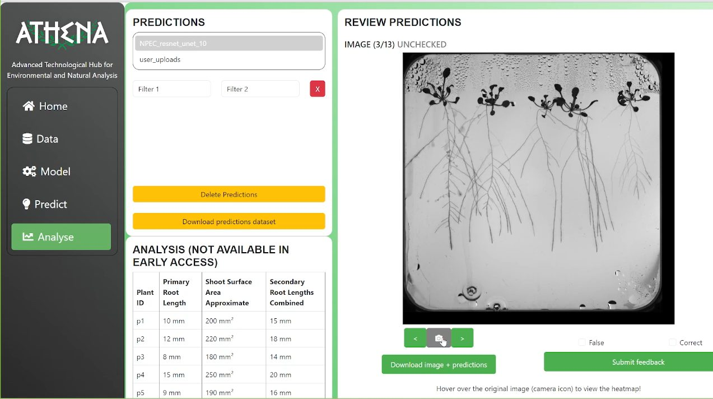
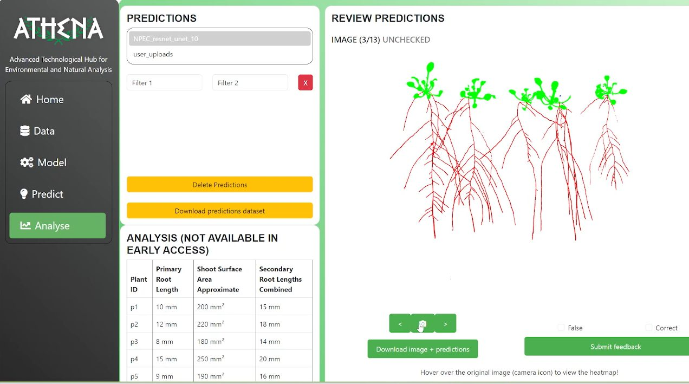

04 / in the app



// NPEC · 2024
Deploying AI models for plant science with cloud integration
I turned machine learning models from research code into production-ready services for ATHENA, a Python package and cloud application that segments plant organs and detects landmarks in high-resolution images for researchers at the Netherlands Plant Eco-phenotyping Centre.
ATHENA enables precise organ segmentation and landmark detection on high-resolution plant images. It processes new data, trains models, and predicts plant organs, returning a heatmap of the model's confidence for each pixel. My role was to take the underlying models from research code to a reliable, deployable application.
A short walkthrough of the deployed ATHENA application, from prediction review to analysis.

